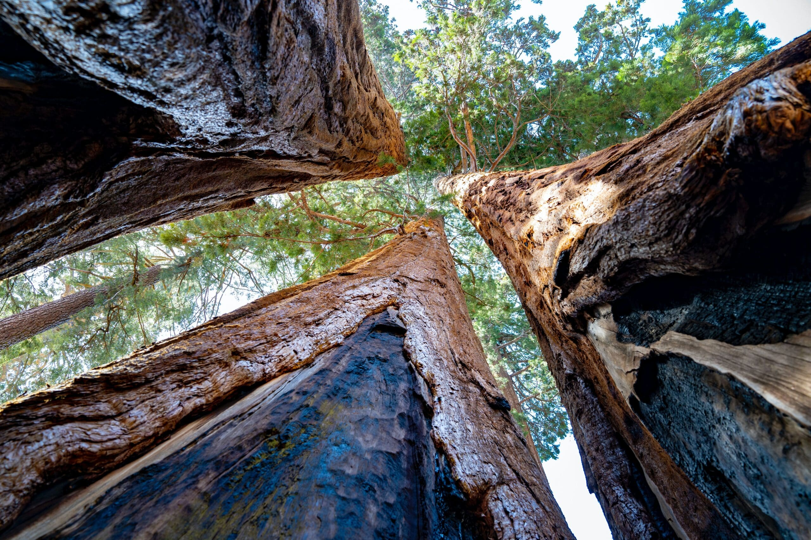

1. Preface#
An overview of the Yuba Forest Health Book contents and connected agencies.
1.1. Background#
In 2023 and 2024, Yuba Water Agency supported the Forest Business Alliance, leveraging statewide CAL FIRE-funded activities to deepen their impact in Yuba County. The overarching goal of the Forest Business Alliance project was to support healthy, resilient forests and the people and ecosystems that depend on them. In Yuba County, our project team worked to advance a three-part effort to increase the capacity of organizations through technical assistance, individuals and organizations through training, and the region through peer learning. These three project elements were chosen to bolster the short and long-term capacity of forest-health-related organizations and businesses.
Through these activities, the Forest Business Alliance project identified challenges specific to Yuba County related to accelerating wildfire safety and the wood products and workforce development that support healthy forests. A focused case study combined stakeholder perspectives with geospatial representation of priority areas. The project team completed a case study and final report, which presented information we gleaned about opportunities, barriers, and challenges in Yuba County regarding forest health and short and long-term options for a pathway forward. Our county-wide findings are presented in this book.
1.2. Yuba County FBA#
A small team with expertise in forestry, business development, and grant writing designed and implemented the Forest Business Alliance project. The Yuba Watershed Protection and Fire Safe Council was the fiscal agent and hub of outreach and technical support activities.
The project specifically focused on four interconnected tasks:
Proposal and Business Development Triage. Task 1 focused on outreach to distribute information broadly about the Forest Business Alliance and our support and expertise. We held one-on-one sessions of direct technical assistance, during which team members met with forest-sector businesses and entities to discuss their needs and potential alignment with grant programs. This task also included developing training and guidance materials, such as project, grant, and business plan development guidelines and strategies, with accompanying templates and other written material. All materials are available at the Forest Business Alliance website (see link above). The last focus of Task 1 was to develop a case study regarding barriers and opportunities in forestry business and workforce development specific to Yuba County. The case study brought together GIS analysis and input from local stakeholders on the strengths, weaknesses, opportunities, and threats to further develop wildfire-resilient communities and forests in Yuba County.
Workshops. Throughout the project term, the Forest Business Alliance team provided an array of workshops on topics including project development, grant writing, business plan development, sawmill/plant operation, forest management and business, workforce development, and workshops on these topics tailored to Tribal audiences (e.g., Federally recognized tribal governments and native-led non-profits). The workshops were designed to build skills and knowledge, preparing individuals and entities for successful fundraising and project implementation. The workshops were recorded and are available online through the FBA’s YouTube channel.
Peer-learning Network. Business owners, non-profit representatives, and individuals engaged with forest-sector activities all came together through the Forest Business Alliance Peer-learning Network (Network). These meetings were held via Zoom with several in-person sessions. Each meeting started with a presenter or panel of presenters with expertise on a particular topic. Following the presentation, Network participants joined break-out groups to discuss topics related to the presentation or self-identified topics of interest. Topics of presentations and discussion included sawmill management, biomass and bioenergy, workforce development, forest management, identifying co-benefits for forest management projects, and resources for developing and financing businesses. Forest Business Alliance team members facilitated the meetings. They set the stage for the sharing and creating cooperative, mutually supportive relationships among peer network members in a learning-by-doing atmosphere that actively employed expert and field-based knowledge to maximize information exchange, problem-solving, and successful project deployment. More information about the Peer-learning Network can be found on the FBA website.
Management, Reporting, Communications. The Forest Business Alliance team developed reporting materials to share project progress with Yuba Water Agency, fiscal agent Yuba Watershed Protection and Fire Safe Council, and media designed for a broader audience. This included guidance materials on business and grant development and this report. The team created flyers and informational documents to share at forest and fire-related events, such as community events attended by the Yuba Watershed Protection and Fire Safe Council. The team also created a guidebook, available at forestbiz.info, which includes chapters on CAL FIRE Grants Analysis, Program Design, Proposal Development, Measuring Success, Compliance Pathways, Monitoring, Resilience Gaps (i.e., forest management in low-income communities), and Scaling (i.e., approaches on how to plan and fund scaling business and organizational development for forest health projects).
For Yuba County specifically, the team organized a publicly available geospatial report (see link at left for Chapter 3) that shows areas of opportunity and barriers to further developing forest-focused businesses and workforce development opportunities in the county.
1.3. Wildfire Crisis#
Living in California means living with fire. The state’s vital and vast forested landscapes are fire-adapted. Still, after more than a century of fire suppression and intensifying climate catastrophe, devastating wildfires have become increasingly the norm across the state. According to CAL FIRE, Yuba County has significant wildfire risk, with a large portion of the county classified as a “Very High” fire hazard severity zone alongside “High” and “Moderate” zones, indicating substantial potential for wildfires across the county, particularly in forested eastern areas with steep terrain and fire-prone vegetation.
Fortunately, Yuba County has not experienced devastating fires in recent years. However, the county is sandwiched between massive, catastrophic fires since 2020, including the Camp, North Complex, Caldor, and Dixie fires. Fires within county borders have been relatively small (Fig. 1.1).
{kind=link}
Fig. 1.1 Large wildfires since 2020 in the Northern Sierra Nevada.#
Entities within the county—such as the Yuba Water Agency, Yuba Watershed Protection and Fire Safe Council, and Yuba Resource Conservation District—have been working steadily to increase forest management to reduce fire risk and improve forest health. However, large portions of the county remain untreated, and there are unrealized opportunities to increase collaboration among large landowners. Fire does not recognize jurisdictional boundaries, so its impacts in surrounding areas provide an important lesson in working collaboratively across large landscapes. It is critical to continue supporting robust partnerships to manage forests. This book is designed to help illustrate key factors in the county that impact fire risk and opportunities for developing projects and partnerships to address risk. We hope this book can be used to drive conversations, inform project design, and increase understanding of the risks we live with—to inform our decision-making and work together to protect our communities, infrastructure, and ecosystems.
1.4. Chapters#
This book contains the following chapters:
Preface. (This chapter) Introduces the Yuba Forest Health book and an overview of the chapters and agencies involved in forest health in Yuba County and the region.
SWOT. A strength, weaknesses, opportunities, and threats analysis of the Yuba forest landscape and organizations.
Geospatial. A geospatial analysis of communities and infrastructure at risk in Yuba County.
Lessons Learned. A summary of lessons learned while implementing the Yuba Forest Business Alliance Project. The project was designed as a pilot to enhance and accelerate funding and implementation of forest health and related business development projects in Yuba County.

1.5. Funders#
Two key funders made the project possible: Yuba Water Agency and CAL FIRE’s Business and Workforce Development Program.
1.6. Yuba Water Agency#
The Yuba Water Agency is a stand-alone public agency governed by a board of seven elected officials to serve the people of Yuba County. Established by a special act of the California State Legislature in 1959, the agency’s primary missions are flood risk reduction, water supply reliability, fish habitat protection and enhancement, hydroelectric generation, and recreation at New Bullards Bar.
Today, the Yuba Water Agency owns and operates facilities that can store approximately 1 million acre-feet of water and generate more than 400 megawatts of hydropower. The agency releases more than 260,000 acre-feet of water to 8 irrigation districts annually, conveying the water to local farmers and ranchers in Yuba County.
The agency has been instrumental in supporting forest health as a funder of the forest management efforts of several organizations, as well as an implementer of projects, and a participant in the North Yuba Forest Partnership, while also supporting research and analysis that examines collaborative finance programs [Russell and Odefey, 2024].
1.7. CAL FIRE#
CAL FIRE’s Wood Products and Bioenergy program seeks to maintain and enhance the forest-sector workforce and businesses of California to promote healthy, resilient forests throughout the state by providing grant funding to business development and workforce development projects. Eligible business development projects include facilities, operations, and professional services that support the restoration of healthy, resilient forests by improving the wood products industry. More information on upcoming grant solicitations and past funded projects can be found on the program’s website (see link above).